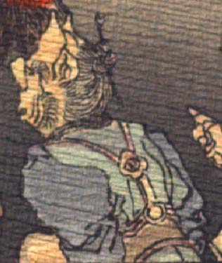

老人のような鬼。頭頂が禿げ、2本角が生えている。眉毛が濃く、目玉は小さい。頬ひげを生やしている。異国風の青い衣服を身に着け、座っているようである。
著作者：J.Dautremer／出典：親書誌：U426_nichibunken_0123：Le vieillard et les démons／日付：2006／資源識別子：U426_nichibunken_0123_0004_0009
Copyright (c)2010- International Research Center for Japanese Studies, Kyoto, Japan. All rights reserved.